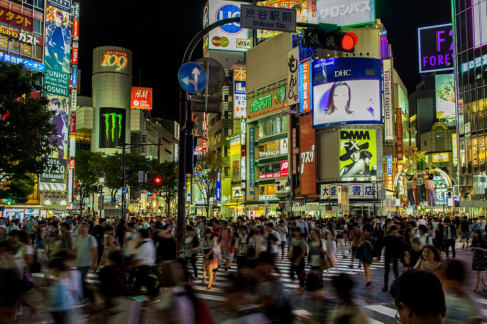
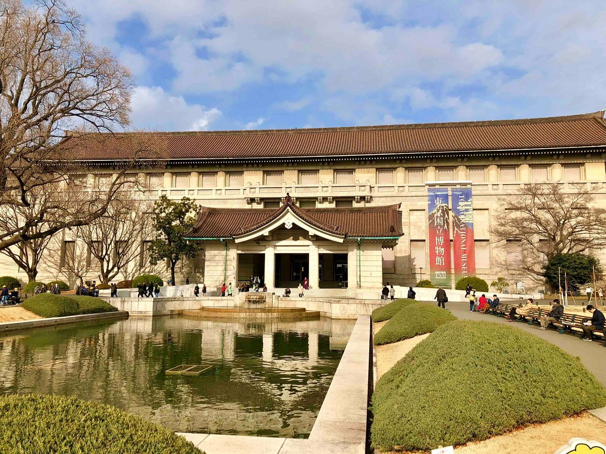
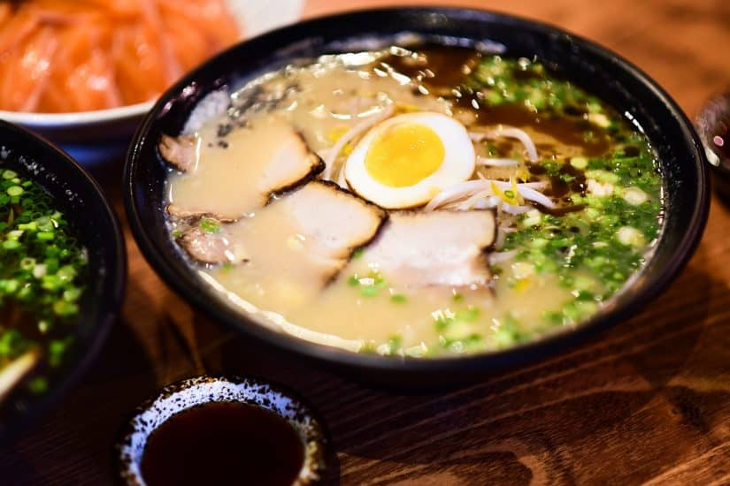

Ponto 5 - Japão

Ao chegarmos, iriamos a Tóquio, e após o hotel, com certeza iriamos começar visitando alguns dos bairros mais famosos do lugar: Shibuya, Shinjuku, Akihabara e Asakusa.

Também iriamos visitar varios pontos turisticos como o Museu Nacional de Tóquio, o Museu Nacional de Ciências e Inovação e o Museu Edo-Tokyo

E é claro que iriamos visitar o famoso Monte Fuji
E não vamos esquecer das comidas!

Gostaria de tambem experenciar algumas das bizarrices do lugar:
É então que chegamos ao fim da viagem.